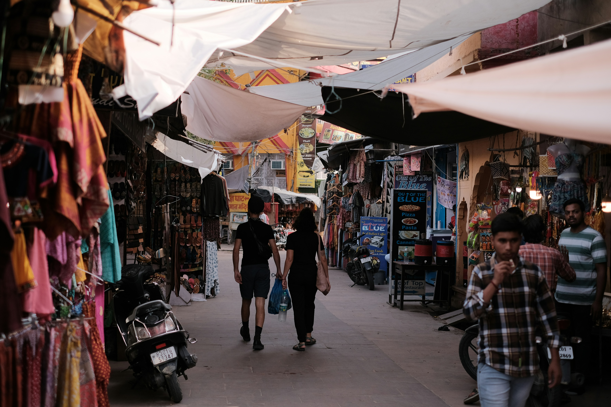
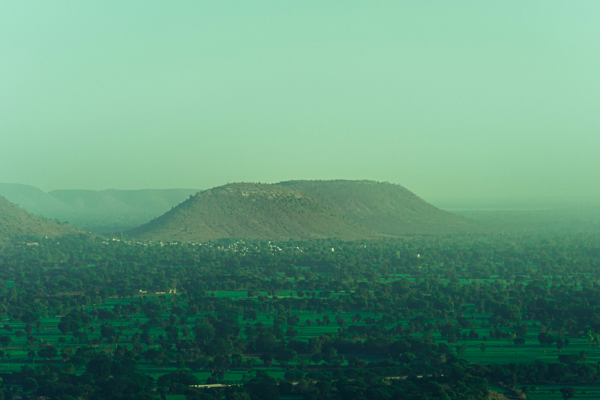
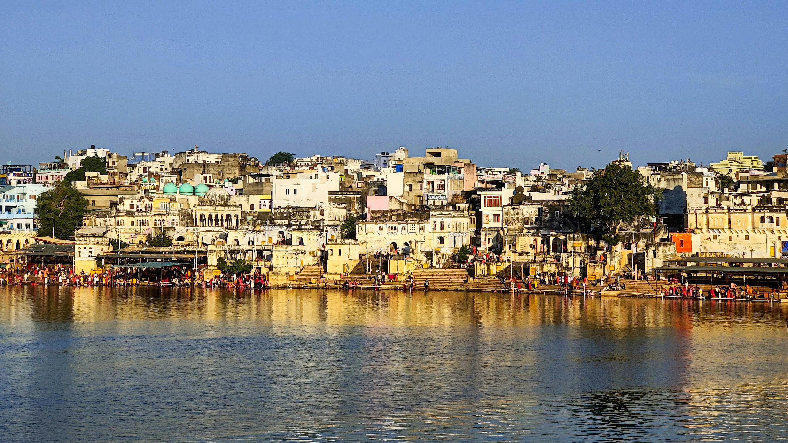
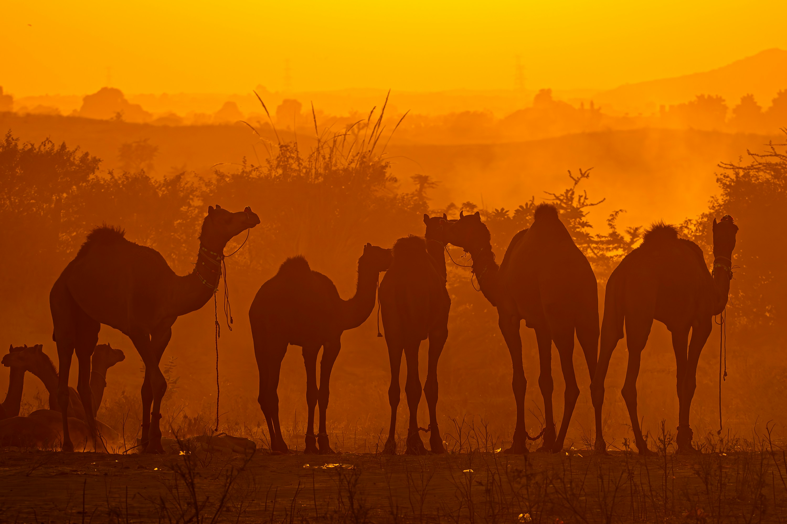
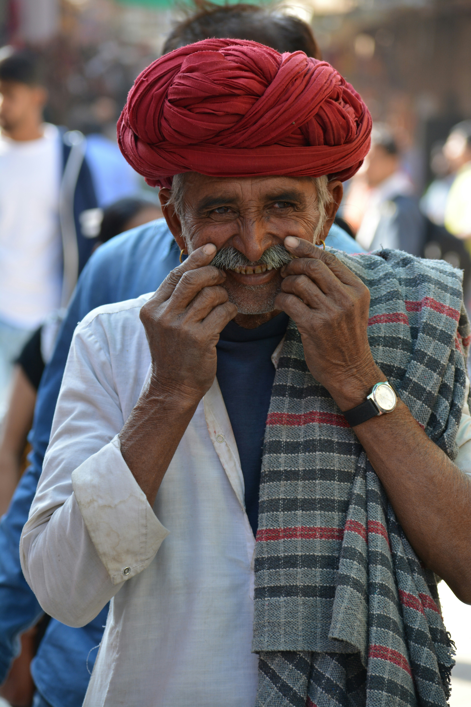

The Pushkar Glitch
Where the slower you go, the more you become part of its story
discover this experience
Where the slower you go, the more you become part of its story
discover this experience
Pushkar doesn't do well with speed; it's a place best known slowly, deeply, without engines or hurry. We invite you to experience the town where the creation of the universe began — glitching reality into being. In this unhurried space, cycle with ease through sacred landscapes, quiet village paths, and desert trails. Every turn reveals why slow travel is the only way to truly understand a place. Let the rhythm of your wheels become a meditation, and let Pushkar's timeless stories unfold around you.
View Journey Details
3D/3N
10 Cyclists
1 of 5 (Beginner Friendly)
Pushkar
Pushkar
To be announced
To be announced
Cycling
14+

Our carefully planned journey ensures you experience Pushkar at its most authentic. Click on each item to see details.
After breakfast, we begin our ride with a visit to the sacred Brahma Temple, one of the few temples in the world dedicated to Lord Brahma. From here, we cycle through the quiet countryside and rolling hills towards the serene Aloo Baba Temple, a peaceful retreat surrounded by nature. We'll spend time exploring the area, taking in the views, and experiencing a slower side of Pushkar before riding back as the day winds down.
Distance: 30km.
Today, we'll set out through golden desert landscapes, passing farms and traditional Rajasthani settlements. Our journey leads to a welcoming village where we'll savor an authentic lunch of regional specialties. After our meal, we'll relax and explore the timeless surroundings before beginning our return. As evening approaches, we'll ascend via ropeway to Savitri Mata Temple, where we'll witness the desert sunset painting the sky in hues of amber and rose — a moment that stays with you long after the light fades.
Distance: 40km.
On our final day, we'll ride through farmlands, lush nurseries, and past rustic villages, where the rhythm of rural life unfolds around us. The trail at one point glitches to a different landscape, guiding us to a serene hillside sanctuary known only to locals. After exploring the peaceful grounds, we'll take a short nature walk to a panoramic viewpoint, where the landscape stretches endlessly before us. A quiet pause to reflect before we cycle back, carrying the spirit of Pushkar with us.
Distance: 40km.






The Event Terms and Conditions detailed below apply to all participants of 'The Pushkar Glitch' as well as attendees or participants (herein after called "Participant") participating in any of Cycle Culture's ("organizer", "we", "us", "our") cycling events.
By registering for this event, you agree to abide by all terms and conditions set forth below. The organizer reserves the right to modify these terms at any time without prior notice.
Participants must complete the registration process and pay the full event fee to secure their spot.
All participants must be at least 14 years of age at the time of the event. Those under 18 must be accompanied by a parent or legal guardian.
The organizer reserves the right to refuse entry to any participant who does not meet the requirements or fails to provide necessary documentation.
Participants will be provided with cycles and basic safety gear including helmets.
Helmets are mandatory for all participants during cycling activities. Participants are encouraged to bring personal cycling gloves and attire for comfort.
The organizer is not responsible for any damage to personal equipment during the event.
Participants should be comfortable with moderate cycling (25-30km per day) and short hikes (Tiffin Top).
Participants with pre-existing medical conditions must consult their physician before participating and inform the event organizers.
The organizer reserves the right to remove any participant from activities if they appear to be physically unable to continue or pose a risk to themselves or others.
Participants must respect local customs and traditions, especially at Kainchi Dham and other sacred sites visited during the journey.
Appropriate modest clothing is required for temple visits. Photography restrictions at certain sites must be observed.
We follow Leave No Trace principles — please carry back any waste and respect the natural environment.
Cancellations made more than 10 days prior to the event will receive a full refund.
Cancellations made 0-10 days prior will not receive any refund.
No refunds will be issued for cancellations made less than 10 days before the event.
The organizer reserves the right to cancel the event due to unforeseen circumstances (extreme weather, road closures, etc.). In such cases, participants will receive a full refund or option to reschedule.
By participating, each participant acknowledges that cycling and outdoor activities involve inherent risks. Participants agree to release Cycle Culture and its guides from any liability for injuries, damages, or losses arising from participation, except in cases of gross negligence.
A detailed liability waiver must be signed before the start of the tour.